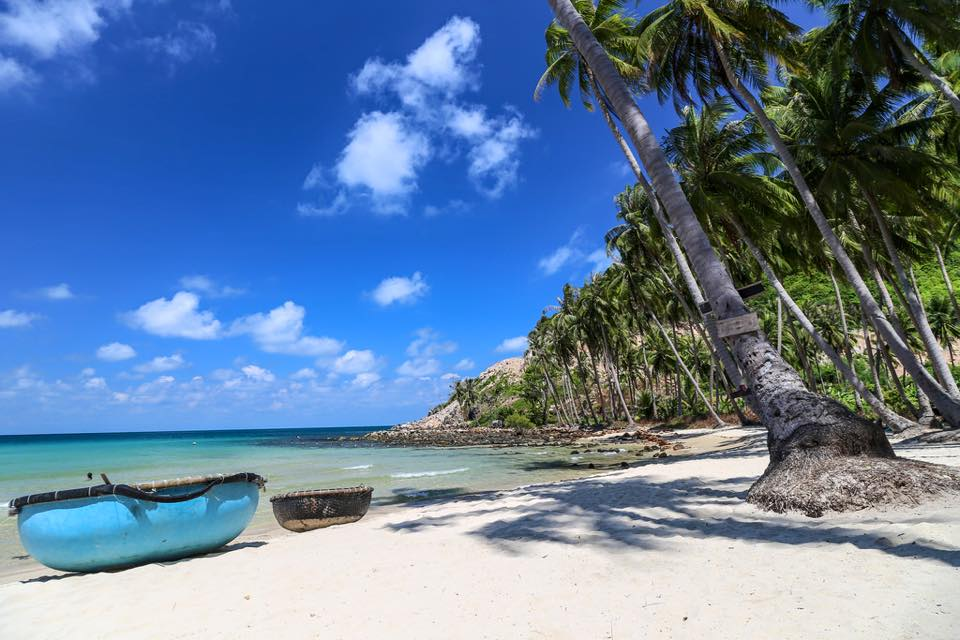
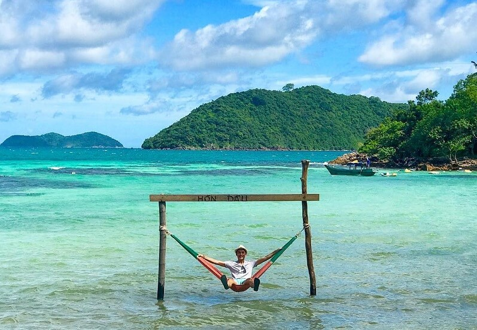
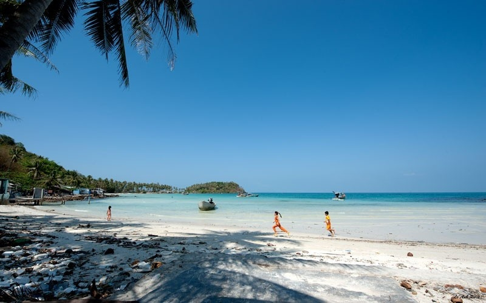
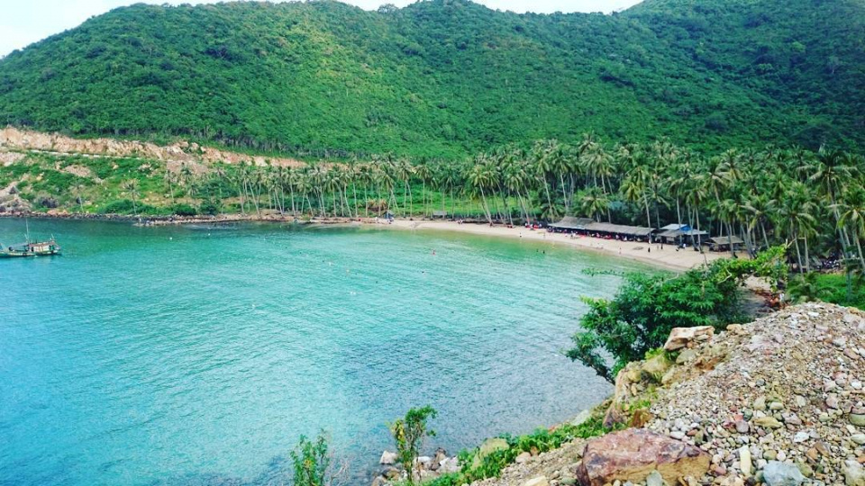
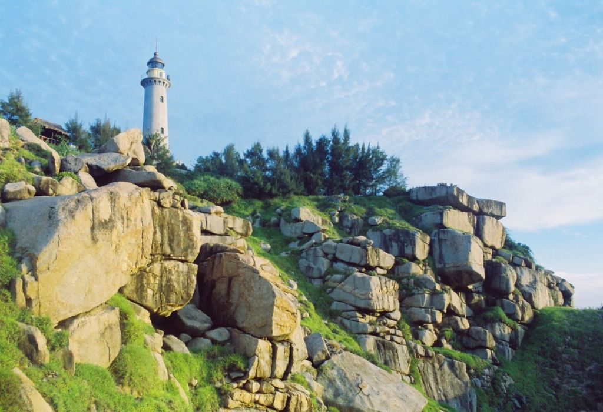

Các điểm du lịch tại Nam Du
Bãi Cây Mến
Nơi được xem là bãi biển đẹp nhất Nam Du, những hàng dừa xanh nghiêng bóng, tuổi thọ có cây lên tới 70 - 80 năm. Đến đây, bạn có thể lặn bắt mực, bắt cá, hoặc ngắm san hô đủ màu sắc. Đồng thời, bạn có thể tha hồ chơi đùa, tắm biển thỏa thích, bắt ốc ở bãi đá dọc bãi tắm. Nước biển trong vắt và mát lạnh.
Hòn Dầu
Hòn Dầu thậm chí còn hoang sơ so với các đảo khác. Những hàng dừa xanh mướt trải dài và đặc biệt là hình ảnh "cây dừa Hawai" nằm đổ ra biển khiến Hòn Dầu ghi điểm tuyệt đối trong mắt những du khách thích khám phá. Hòn Dầu có 2 bãi, 1 bãi đón bình mình và 1 bãi đón hoàng hôn. Là nơi lý tưởng để cắm trại, ngủ liều và thưởng thức hải sản tươi ngon.
Hòn Mấu
Hòn Mấu được tạo hóa thiên vị khi ban cho hòn đảo nhỏ này những bãi biển tuyệt đẹp. Có đến năm bãi biển trên đảo. Trong đó, có hai bãi cát trắng mịn hiếm nơi nào có được là Bãi Chướng và Bãi Nam, còn lại ba bãi đá là: Bãi Bắc, bãi Ðá Ðen và bãi Ðá Trắng.
Bãi ngự
Bãi biển này được gắn với nhiều câu chuyện về vua Gia Long - Nguyễn Ánh. Mùa khô, bãi này vẫn đầy đủ nước ngọt trong khi các khu vực khác thiếu nước trầm trọng. Tại đây vẫn còn một cái giếng Cổ luôn đầy nước. Người dân địa phương cho rằng giếng được đào khi vua đặt chân đến đây nên được đặt tên là giếng Ngự - giếng Vua dùng.
Hải đăng Nam Du
Nằm trên đỉnh Hòn Lớn thuộc xã An Sơn. Đây được xem là ngọn hải đăng đẹp và cao nhất Việt Nam nhờ nằm ở đỉnh đồi cao hơn 300 mét so với mực nước biển. Đứng từ đỉnh có thể phóng mắt ngắm được toàn cảnh Nam Du, như một tuyệt tác của thiên nhiên, đẹp nhất là lúc bình minh hoặc ráng chiều mờ ảo càng làm cho du khách mê hồn. Con đường lên ngọn hải đăng có một cung đường gọi là dốc Ân Tình với hai bên đường cây cỏ xanh mát xen lẫn nhiều lá vàng phủ khắp nẻo thật lãng mạn.